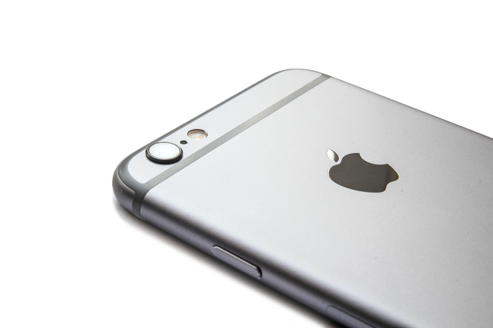
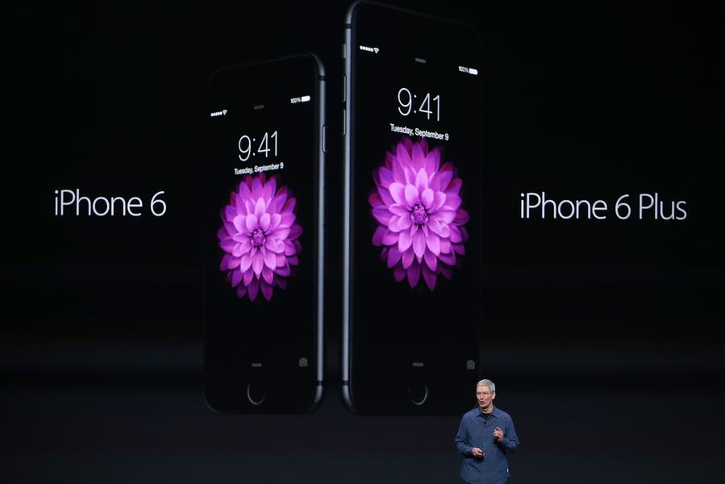

Tuition is only one part of the cost of going to college. Other expenses range from meals to housing to bus passes. Learn how all these expenses add up to a college's "sticker price." In its most recent survey of college pricing, the College Board reports that a "moderate" college budget for an in-state public college for the 2013-2014 academic year averaged $22,826. A moderate budget at a private college averaged $44,750. But what makes up these charges? Of course, financial aid might help cover some costs, but it is good to know how they add up to a total "cost of attendance" figure provided by the college.
First of all, there is tuition, the money you pay a college for academic instruction. Then there are "fees," charges for specific services such as Internet access. Many colleges list "tuition and fees" as one amount without breaking it down. And lastly, there are all the other expenses associated with going to college: housing, meals, books, school supplies, and "miscellaneous." If you are wondering what's behind these costs, read on.
Tuition is what colleges charge for the instruction they provide. Colleges charge tuition by the units that make up an academic year, such as a semester or quarter. An academic year typically runs from fall through spring. Tuition at public colleges is often a bargain for state residents, but not for out-of-staters, who often pay double the tuition of residents. (Other costs, such as student fees and room and board, are usually the same for residents and nonresidents.) Tuition at some colleges can vary by major. Students in the sciences, engineering, computing, premed programs, and the fine arts often pay more. For example, at University of Illinois Urbana-Champaign, students enrolled in the science and engineering programs paid $4,920 more in tuition for the 2013-2014 academic year. This is called "variable tuition" and it is worth checking into if you have a major in mind.
What will define Derek Jeter's career?

Everyone seems to have an opinion about Derek Jeter's place in history, and no one can agree as to what that will be.
I was watching an ESPN highlight reel showing Derek Jeter's best career moments, and the anchor ended the segment by emphasizing that "Stats can't define him" and that one couldn't talk about numbers when talking about him, that he merely played the game the right way and had the intangibles, so to speak. People on the analytical side, of course, rarely mention these defining moments as evidence for his Hall of Fame case; he was statistically one of the best shortstops in history, and that's pretty much all you need to know. These mock debates over what best defines Derek Jeter is just as ridiculous as the "old school vs. new school" debate that was completely fabricated to create some controversy. This "debate" isn't necessarily as high profile as that one, but it still comes from the same template.
In one hundred years from now, what will people say about Derek Jeter? Will baseball go all the way to the dark side and fully accept analytical stats, using wRC+ and WAR as pillars of success, or will his career merely be another highlight reel to show on whichever media these future humans use? That's very hard to say, but I'd have to say that it mixes a bit of both. In the past ten years we've seen an exponential growth in the popularity of advanced metrics, so popular that we see WAR and FIP popping up on popular media and at ballparks themselves. There is no doubt in my mind that advanced metrics will become even more popular in the future, especially as MLBAM's new data will be able to track every aspect of every single play. Baseball fans have and will always continue to like more data, and baseball will give it to them. I don't know if RBI's and batting average will ever become truly extinct, but I doubt it will be at the forefront of baseball discussion.
iPhone 6 Plus: It's Not You, It's Me... Well, It's Also You
I really wanted to love the iPhone 6 Plus. It has two clear advantages over its smaller sibling a bigger, crisper screen and a larger, longer lasting battery that provide tangible benefits. Given that I use my smartphone several hours a day, it seemed like the perfect choice for me as I've been longing for a bigger iPhone for so long, I've nearly switched to an Android model on several occasions. It was against that backdrop that I picked up an iPhone 6 Plus on Friday, expecting to fall in love. Not only hasn't that happened, I'm beginning to doubt it will. Let me tell you about my first date and also make it perfectly clear, you may see things in an entirely different light.
My earliest smartphone was, in fact, an Android model so when the iPhone 5 came out with the larger screen a disappointing jump from 3.5 to 4 inches I gave serious consideration to returning to Googleland. At the time, I took a look at the Galaxy Note phablet that was for sale and decided it was just absurdly large. The Galaxy S3, on the other hand, seemed pretty reasonable and very nearly drew me to Android. For whatever reason, I stood pat, eventually picking up a Nexus 7 tablet to add to my mobile arsenal, but sticking with Apple's smartphone platform. Still, I grew tired of the small screen, eventually taking to calling it "puny." Lousy for typing, reading, gaming...Really everything except using the phone with one hand. Yes, Apple, when you have something to market, you're good at telling the story. Never mind, I thought regularly, that you couldn't actually reach the top left corner of the screen without shifting your hand a bit (assuming you hold it right handed). The truth is the iPhone 5 is mostly usable with one hand. With the passage of time, those Note phablets seemed a bit less absurd; or so I thought.
After two days with the iPhone 6 Plus, here's what I can tell you: For an average-sized individual, the 6 Plus is essentially unusable with one hand. If you're just reading a book or watching a video, you can perhaps manage. But if you want to actually do anything? Fuhgedaboudit. The problem is that despite Apple's clever fix in the form of what it calls Reachability a double tap on the Home button moves the top of the screen down to the middle every actual reach upsets the delicate balance of holding such a large device. To press the Home button, you need to be holding the phone on the lower portion, but once you reach for it, the upper half causes a lever effect and tends to tilt away from you. While I haven't dropped the phone yet, it's hard to imagine spending two years performing such a delicate balancing act. But that's not the only ergonomic issue that readily becomes apparent. These days, many apps allow you to go back by swiping from the left edge of the screen. This is more elegant than ever on the rounded glass of the 6 and 6 Plus. With my 5 foot 10 height and right-hand dominance, my fingers don't reach that edge until I tip the phone a bit. It's doable, but it’s not pleasant or easy. In a nutshell, using the phone one-handed, nothing is. Almost every app requires manipulating more of the screen, frequently, than you can reach without tipping, angling, twisting or reaching uncomfortably. This is worse than I imagined it would be.
Now, I should point out that two-handed use is mostly uneventful, in the best sense of that word. Things just work, much like they do on an iPad Mini. You have to do some shifting to get from the top to the bottom of the screen that's still too far for one hand to reach - but you can quickly learn to use one hand as the primary "upper" and one as the "lower" most of the time. It's also fair to say that the 6 ounce weight of the Plus feels like very little in two hands and the smooth metal back is quite comfortable to hold. And, oh, that screen. My goodness. I have a Galaxy S5 with me, which has the best screen I've ever seen on a mobile device. Without running exhaustive tests, I'd say the 6 Plus screen is right up there with it. I'm also fortunate to have an iPhone 6 in the house and while the difference is subtle, it doesn't appear quite as nice. I’m sure some of that is the lower pixel count and lower resolution (326 pixels per inch, like prior iPhones, rather than the 401 of the Plus), but there may be other qualitative differences in the displays that further testing could demonstrate. (The 6, incidentally, is both comfortable to hold and mostly usable with one hand thanks to the thin profile and the much smaller display.) The other immediately apparent downside with the Plus comes from carrying it around. While I have no trouble fitting it in all the pants and shorts I own, it makes its presence known in a way the iPhone 5/5s rarely did. The extra 2 ounces have something to do with that, but the much larger screen area has more impact. You know it's in your pocket. And, sometimes, it's not very comfortable to have it there. In that respect, the smaller iPhone 6, by shedding weight and inches, offers a compromise that becomes clear with real world use. I also felt like the 6 Plus was big enough it could sneak its way out of some pockets, which might make running across the street an expensive decision. Again, living with that for the next year or two, always being concerned, might be too much to take.
Garmin's new $170 Vivosmart fitness tracker is almost a smartwatch
Garmin's new Vivosmart fitness tracker is a plastic band that sits on your wrist and tells you when you're being lazy. The Vivosmart has a "move bar" that displays five segments that fill up slowly if you're sat in place too long. After an hour of inactivity, the tracker vibrates with a suggestion to get up and out of your seat that can be dismissed by taking a short walk. When it's not jabbing you for being a slob, the Vivosmart also advises you if you receive calls, text messages, and emails if you sync your smartphone or tablet with the device using Bluetooth. Double-tapping the touchscreen OLED display also shows the time, the number of steps you've taken, and personalized goals. When it's not in use, that screen fades out of sight, making the Vivosmart available in five muted colors look more like a chunky charity wristband than a piece of jewelry.
The best fitness trackers are unobtrusive and can be worn for extended periods of time. Garmin says its Vivosmart is lightweight and it expects users to "rarely take it off," giving the device a 7-day battery life and making it waterproof to allow you to keep it on your wrist for longer. Like the excellent Jawbone Up, the Vivosmart can also send data on exercise and sleep habits to the Garmin Connect Mobile app, and food data to the widely used MyFitnessPal app.
Garmin's previous activity tracking device, the Vivofit, lacked the features that made the Jawbone Up the better tracker. But with access to the reams of sleep, exercise, and food data that the cheaper model is missing, the Vivosmart looks like a legitimate rival to the best fitness tracker on the market, and close to a full smartwatch in terms of functionality. It'll be available to purchase in Best Buy from the middle of September in the US, and elsewhere from November, for a price of $170, or $200 with a heart rate monitor.